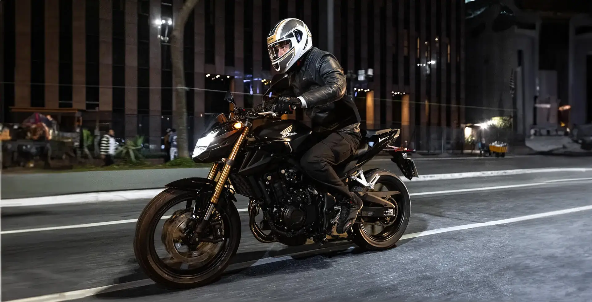
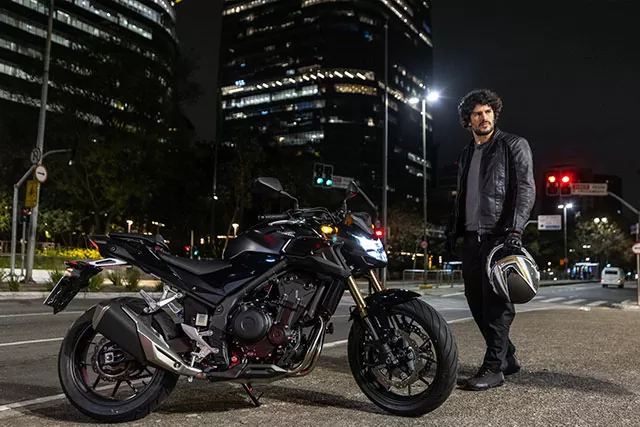
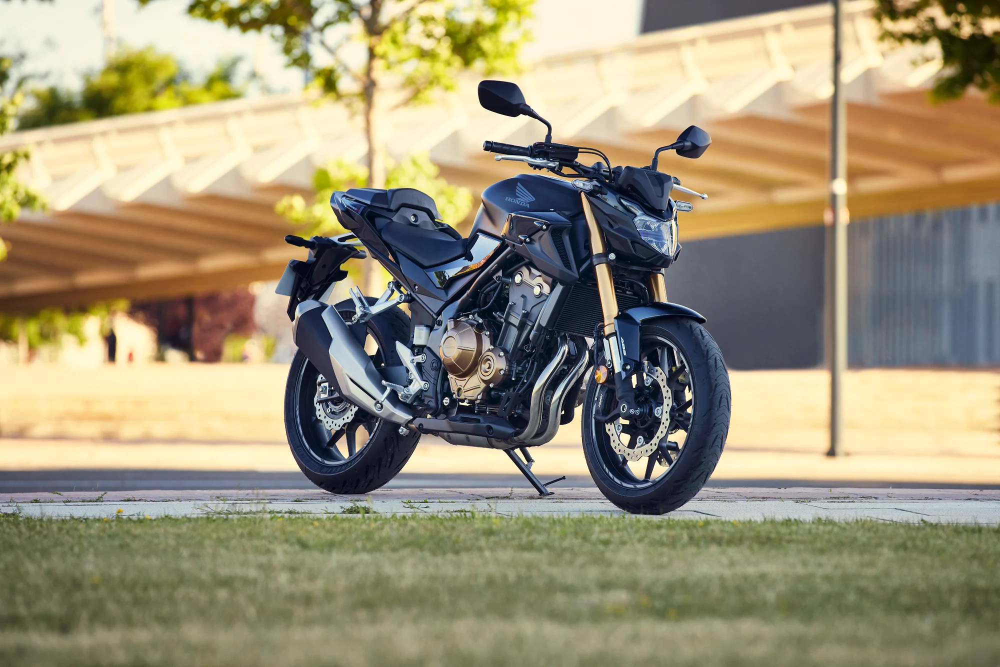
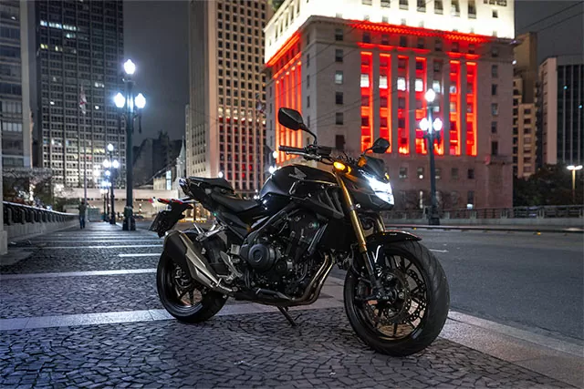

A Honda CB 500F combina performance, conforto e design agressivo em uma naked moderna perfeita para cidade e estrada.

500cc
50 CV
185 km/h
R$ 43 mil
A Honda CB 500F é conhecida pelo equilíbrio entre desempenho e economia. Seu motor bicilíndrico entrega aceleração suave, excelente torque e ótima pilotagem para iniciantes e experientes.
• Painel digital moderno
• Iluminação Full LED
• Suspensão confortável
• Freios ABS
• Design naked agressivo


